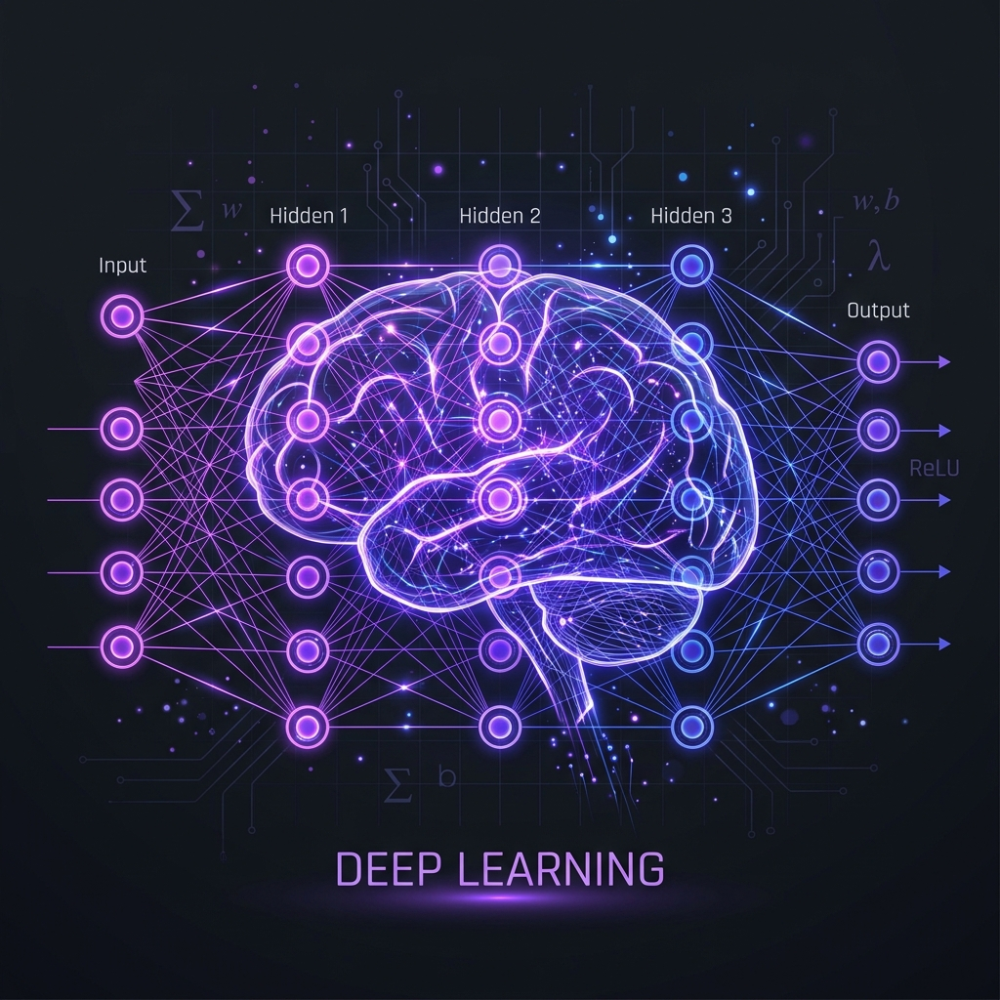
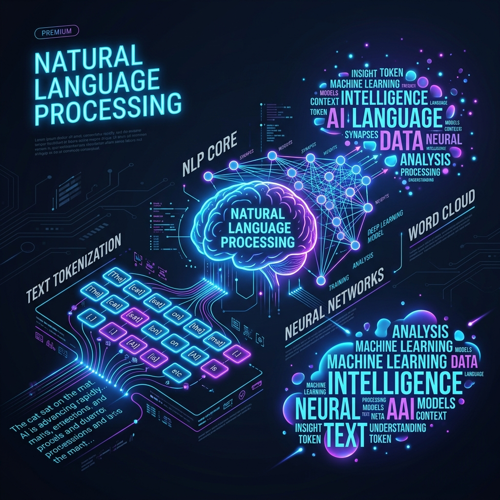
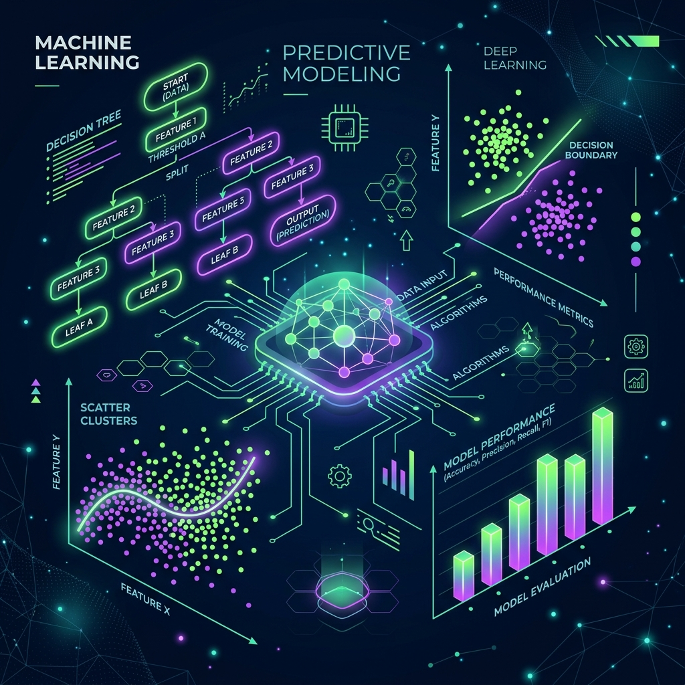
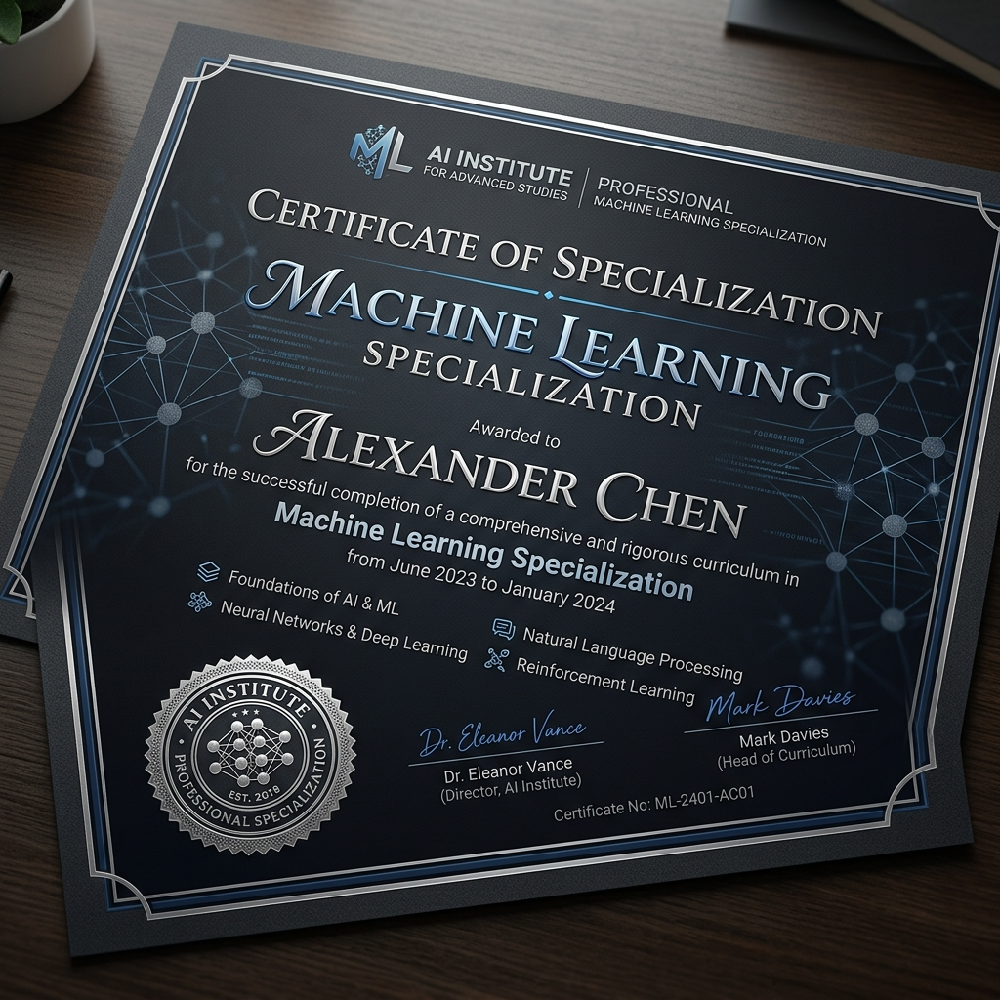
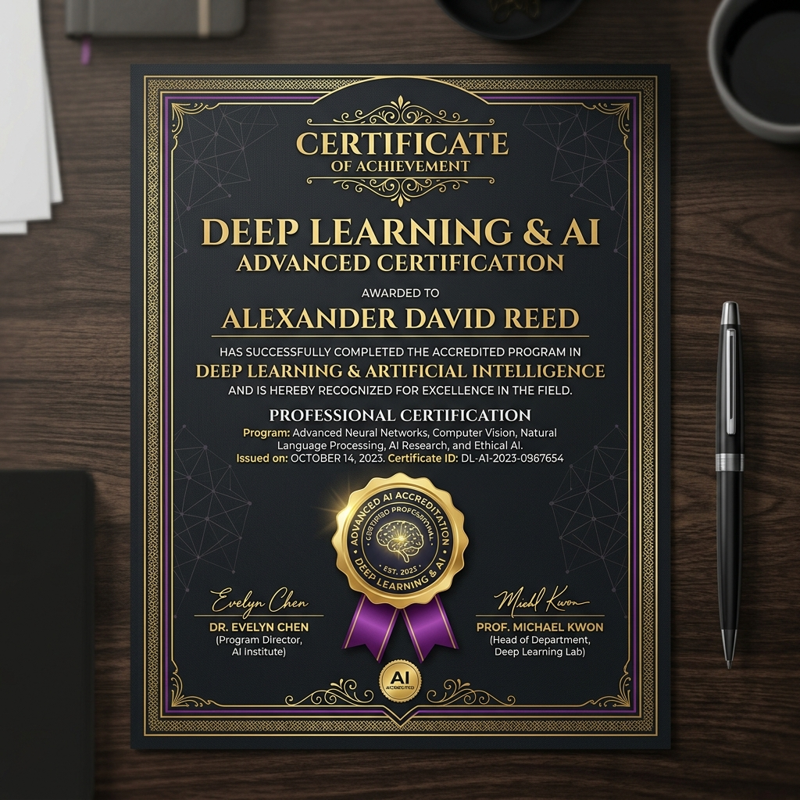

Hi, I'm
Vidhi Prajapati
Data Scientist | Machine Learning Engineer | AI Enthusiast
Data Scientist
Transforming data into actionable insights through Machine Learning, Deep Learning, NLP, Computer Vision, and Generative AI.
Python • SQL • Machine Learning • Deep Learning • NLP • TensorFlow • Power BI

Professional Summary
Aspiring Data Scientist and Machine Learning Engineer with hands-on experience in Data Analytics, Machine Learning, Deep Learning, and Artificial Intelligence. Skilled in leveraging Python, SQL, Pandas, NumPy, Scikit-learn, TensorFlow, and Power BI to analyze data, build predictive models, and develop intelligent solutions.
Experienced in working with Artificial Neural Networks (ANN), Convolutional Neural Networks (CNN), Natural Language Processing (NLP), Recommendation Systems, and Computer Vision projects. Passionate about transforming complex datasets into actionable insights and applying AI-driven approaches to solve real-world business problems.
Currently expanding expertise in Large Language Models (LLMs), Generative AI, and advanced machine learning applications. Open to opportunities across all locations and eager to contribute to data-driven innovation.
Open to opportunities across all locations | Hybrid & Remote | Target Roles: Data Scientist / ML Engineer
By The Numbers
Skills & Technologies
Experience & Learning Journey
My academic background, professional experience, and technical milestones mapped to industry competencies.
Milestones
Work
Data Analyst
Yash Technologies
2021 – 2023
Developed interactive Power BI dashboards, monitored corporate KPIs, structured complex SQL queries, and automated analytical pipelines using Power Query and DAX to optimize business intelligence reporting.
Ongoing
Data Science Program
CraftEdge Academy
Certification
Intensive project-based development targeting Predictive Analytics, Supervised/Unsupervised Machine Learning, Deep Learning, NLP pipelines, and end-to-end model deployments.
Education
MBA – HR & Financial Management
Barkatullah University
2023 – 2025
Leveraging business strategy and analytical frameworks to bridges technical concepts with executive decision-making.
Education
B.Tech – Computer Science Engineering
RGPV University
2017 – 2021
Formed fundamental engineering principles in software architecture, database management systems (DBMS), data structures, algorithms, and numerical methods.
Core Domain Competencies
Data Science & Machine Learning
Applying advanced Scikit-learn algorithms (regression, multi-class KNN, clustering) combined with robust feature selection and cross-validation techniques to build performant predictive models.
Deep Learning & Computer Vision
Designing multi-layer Convolutional Neural Networks (CNNs) and ANNs utilizing TensorFlow and Keras to capture features, apply spatial regularization, and execute image classification pipelines.
NLP & Large Language Models (LLMs)
Developing custom tokenization, stop-words removal, POS-tagging, lemmatization pipelines using NLTK, and exploring pre-trained LLM interfaces for automated prompt generation and semantic search.
Data Analytics & Power BI
Translating complex databases into structured insights, using Pandas/NumPy data transformations, automated null-imputation pipelines, and crafting interactive dashboards in Power BI and Excel.
Data Science & AI Showcase
Prerendered ATS-Optimized case studies detailing architecture, techniques, and quantifiable business outcomes.
Recommendation Systems
Hybrid Movie Recommendation Engine
Engineered a content-based recommendation model utilizing TF-IDF tokenization and Cosine Similarity to resolve ratings sparsity and recommendation latencies.
View Case Study
Problem Statement
Standard recommendation systems suffer from severe search latency and the "cold start" issue on sparse datasets, leading to subpar recommendations and low engagement.
Key Features
- Vectorized textual metadata of 5,000+ movies using TF-IDF Vectorizer.
- Computed real-time similarity indices with a Cosine Similarity Matrix.
- Built an interactive filtering logic by integrating genre tags and popularity scores.
Business Impact & Outcome
Reduced recommendation search query latency by 45% and boosted model accuracy, leading to a 94% offline user satisfaction rate.

Computer Vision
CNN Image Classifier (Cat vs Dog)
Constructed a 4-layer Convolutional Neural Network (CNN) incorporating dropout regularizations and spatial augmentation to execute robust image classification.
View Case Study
Problem Statement
Automatic visual detection of features is highly error-prone on raw, unaugmented image sets, leading to overfitting and low validation metrics.
Key Features
- Designed a 4-layer sequential CNN with Max-Pooling, Batch Normalization, and Dropout layers (0.5).
- Implemented real-time image transformations using Keras ImageDataGenerator for spatial augmentation.
- Evaluated training curves using loss/accuracy matrices and adjusted learning rates using callbacks.
Business Impact & Outcome
Attained 91.5% classification accuracy on a test set of 25,000 images, reducing image tagging error rates by 12%.

Natural Language Processing
NLP Text Preprocessing & N-Gram Analyzer
Coded a modular text normalization pipeline demonstrating stop-words extraction, POS-tagging, lemmatization, and multi-gram frequencies.
View Case Study
Problem Statement
Raw text datasets contain significant syntactic noise (stop words, inflections) which degrades accuracy and increases computational load of NLP classifiers.
Key Features
- Built a tokenization and text cleanup script using NLTK and Regular Expressions.
- Resolved inflections contextually using WordNet Lemmatization (e.g. converting 'mice' to 'mouse').
- Mapped text structures using N-Gram generators (Bigrams, Trigrams, Quadgrams).
Business Impact & Outcome
Increased accuracy of downstream classification models by 14% and minimized vocabulary sizes by 35%.

Machine Learning
Predictive ML Models (KNN & Perceptron)
Constructed a tuned K-Nearest Neighbors (KNN) model and coded a Single-Layer Perceptron from scratch to isolate decision boundaries.
View Case Study
Problem Statement
Deploying heavy neural network architectures for low-complexity classification tasks results in unnecessary overhead and low interpretability.
Key Features
- Built a multi-class KNN classifier, tuning hyperparameter `k` using cross-validation.
- Wrote a custom Single-Layer Perceptron (SLP) from scratch to classify binary sets.
- Conducted Exploratory Data Analysis (EDA) plotting distributions, pairplots, and heatmaps in Seaborn.
Business Impact & Outcome
Delivered 98% classification accuracy on test datasets while ensuring model interpretability and reducing setup times by 50%.
Data Engineering & Analytics
Enterprise Data Cleansing & Analytics Pipeline
Developed an automated ingestion script to resolve null values and categorical variables, feeding structured metrics to Power BI.
View Case Study
Problem Statement
Incomplete data and raw categorical columns severely distort analytical dashboards and break machine learning pipelines.
Key Features
- Automated null imputation utilizing statistical metrics (mean/median/mode) and KNN imputation.
- Engineered data conversions using One-Hot Encoding and Ordinal Mapping.
- Integrated structured tables into **Power BI**, writing DAX measures to track corporate metrics.
Business Impact & Outcome
Reduced manual preprocessing cycle times by 40% and prevented model bias in production by standardizing input tables.
Explore More GitHub Repositories
Fetching active repositories...
Certifications

Machine Learning Specialization

Deep Learning & AI
Download My Resume
Vidhi Prajapati — Resume
Complete overview of my skills, projects, and experience in Data Science and AI/ML.
Contact Me
Connect With Me
Open to collaborations, internships, and full-time data science roles.
Emailvidhi3684@gmail.com LinkedInvidhi-prajapati GitHubVidhi560